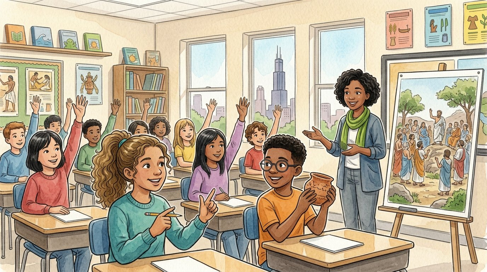

Grade 6 · Social studies · SS.6-8.CV.4.LC · SS.6-8.H.2.LC
Everybody votes?
A story about a class election and the first democracy in ancient Athens.
¿Todos votan?. Un cuento sobre una elección en la clase y la primera democracia, en la antigua Atenas.
Key words you will learn
Tap a green word to see what it means.
Toca una palabra verde para ver qué significa. Con la ayuda activada, verás también la definición en español.
The story
El cuento está en inglés. Pulsa «Listen to the story» para escucharlo y toca las palabras verdes cuando no entiendas una.
The class had to choose a theme for the spring field day. "Raise your hand for Ancient Olympics," said Athena, who was in charge of counting. Fourteen hands went up. "Raise your hand for Superheroes." Eleven hands. "Ancient Olympics wins!" Daniel groaned, but he clapped anyway.
"You just did something that connects to a form of government developed in Athens, Greece, about 2,500 years ago," said Ms. Haddad. "It's called . The word comes from two Greek words: demos, the people, and kratos, power. The people have the power."
She showed a drawing of a rocky hill packed with people. "Athenian met on this hill in an , about forty times a year. Thousands came. Anyone could stand up and speak, and they voted by raising their hands." "Just like us!" said Athena. "Yes. They voted on the laws themselves. That is called ."
"Could we do that in the United States?" asked Daniel. "There are more than 300 million of us," said Ms. Haddad. "We'd never fit on a hill." "So instead, we elect people, like senators and representatives in Congress, to make laws for us. That's a ."
Daniel held up a broken piece of pottery he had made in art class. "Athenians had a strange kind of vote," said Ms. Haddad. "If citizens worried that a person was becoming too powerful, they could scratch his name on a piece of broken pottery. If enough people wrote the same name, he had to leave Athens for ten years. That was called ." "So they could kick out a bully," said Daniel. "A powerful one, yes."
"Then Athens was totally fair," said Athena. Ms. Haddad raised an eyebrow. "Not exactly. Only free adult men whose parents were both Athenian could vote. Women couldn't vote. Enslaved people couldn't vote. People born in other cities couldn't vote, even if they had lived in Athens all their lives." The room went quiet. "So most people didn't vote," said Athena slowly.
"Ideas about who should vote have changed over time," said Ms. Haddad. "In the United States, women won the right to vote across the country in 1920, and the Voting Rights Act of 1965 protected the vote for African Americans who had been blocked. Each time, people had to argue and work for that change."
Athena looked at the board. Fourteen to eleven. "Maybe next time we should ask the other sixth grade class too," she said. "Field day is theirs too." Daniel nodded. "And maybe they like superheroes."
Pause to connect
Visual arts · VA:Cn11.1.6
Look at a silver coin made in Athens around 450 years before the Common Era. Athenians used coins like this to buy and sell.
Observa una moneda de plata hecha en Atenas alrededor del año 450 antes de nuestra era. Los atenienses usaban monedas así para comprar y vender.
See the coin (The Metropolitan Museum of Art) (opens in a new tab)
What you will see: One side shows the head of the goddess Athena wearing a helmet. The other side shows an owl with big round eyes, a small branch of olive leaves and three Greek letters that stand for the Athenians.
Lo que verás: Un lado muestra la cabeza de la diosa Atenea con casco. El otro lado muestra un búho de ojos grandes y redondos, una ramita de olivo y tres letras griegas que significan «de los atenienses».
- Why do you think the people of Athens put their goddess and the owl on their money?¿Por qué crees que la gente de Atenas puso a su diosa y al búho en su dinero?
- What pictures and words are on United States coins and bills? What do they tell people about the country?¿Qué imágenes y palabras hay en las monedas y billetes de Estados Unidos? ¿Qué le dicen a la gente sobre el país?
Think about it, then answer in your notebook or talk it over with someone at home.
Check your thinking
Athena was the protector of the city, the city was named after her, and the owl was her symbol. Putting them on coins told everyone, even far away, that this money came from Athens and that the city was proud and strong. United States money shows presidents, buildings, an eagle and words like "Liberty" and "E pluribus unum," which tell people what the country values.
Glossary
- democracy
- A government in which the people hold the power and make decisions by voting.
- democracia: Un gobierno en el que el pueblo tiene el poder y toma decisiones votando.
- citizen
- A member of a country or city who has rights and responsibilities there.
- ciudadano o ciudadana: Miembro de un país o de una ciudad, con derechos y responsabilidades allí.
- direct democracy
- A democracy in which citizens vote on every law themselves.
- democracia directa: Una democracia en la que los ciudadanos votan ellos mismos cada ley.
- representative democracy
- A democracy in which citizens elect people to make laws for them.
- democracia representativa: Una democracia en la que los ciudadanos eligen a personas que hacen las leyes por ellos.
- assembly
- A big meeting where people gather to discuss and vote.
- asamblea: Una reunión grande en la que la gente se junta para hablar y votar.
- ostracism
- In ancient Athens, a vote to send a powerful person away from the city for ten years.
- ostracismo: En la antigua Atenas, una votación para expulsar de la ciudad por diez años a una persona poderosa.
Questions
Choose the correct answer. If you make a mistake, the story shows you where the answer is.
Elige la respuesta correcta. Si te equivocas, el cuento te muestra dónde está la respuesta.
-
Question A. What does the word democracy mean?
¿Qué significa la palabra democracia?
Democracy comes from demos, the people, and kratos, power: the people have the power.
-
Question B. Why was Athens a direct democracy?
¿Por qué Atenas era una democracia directa?
In the assembly, Athenian citizens voted on the laws themselves, which is a direct democracy.
-
Question C. Why does the United States use representative democracy?
¿Por qué Estados Unidos usa la democracia representativa?
There are more than 300 million people, so citizens elect representatives to make laws for them.
-
Question D. What was the purpose of ostracism?
¿Cuál era el propósito del ostracismo?
If citizens worried that a person was becoming too powerful, they could vote to send him away for ten years.
-
Question E. Why was Athens not fair to everyone?
¿Por qué Atenas no era justa con todos?
Only free adult men whose parents were both Athenian could vote; women, enslaved people and people from other cities could not.
Challenge: explain your thinking
Compare and contrast
Compare democracy in ancient Athens with democracy in the United States today. Give one way they are alike and two ways they are different, using details from the story.
Compara y contrasta. Compara la democracia de la antigua Atenas con la de Estados Unidos hoy. Da una semejanza y dos diferencias, con detalles del cuento.
Answer in your notebook or talk it over with a classmate. Use evidence from the story.
Responde en tu cuaderno o coméntalo con un compañero. Usa evidencia del cuento.
Check your thinking
Alike: in both, citizens hold the power and vote. Different: Athens was a direct democracy where citizens voted on laws themselves, and the United States is a representative democracy where people elect others to make laws. Also, in Athens only free men with Athenian parents could vote. Today, the right to vote is much broader, although there are still rules about who can vote, and some people face barriers to voting.
Go further
Ostracism was a way to protect democracy from someone too powerful. What ways does the United States use today to keep one person from getting too much power? Is that better or worse than ostracism? Explain.
Para ir más lejos. El ostracismo era una forma de proteger la democracia de alguien demasiado poderoso. ¿Qué formas usa Estados Unidos hoy para evitar que una persona tenga demasiado poder? ¿Es mejor o peor que el ostracismo? Explica.
Check your thinking
Today the United States uses regular elections, term limits for the president (two terms) and checks and balances, so Congress, the president and the courts can each limit the others. One reason it may be better: it does not punish a person just because people are afraid of them. One reason ostracism was interesting: citizens could act directly. Any answer works if you give reasons.